GUÍA PARA LA CONFIGURACIÓN DE LA CONVOCATORIA
Información de Control Documental
Código: VI-GU-07
Versión: 01 / 13-MAR-2024
Aviso legal institucional: La impresión o copia digital de este documento se considera "COPIA NO CONTROLADA". Solo se garantiza la actualización de la documentación en el sitio oficialhttp://www.udea.edu.co.
Contenido
- Definición
- Políticas
- Contenido
- 3.1. Ingresar al sistema SIIU por el portal institucional
- 3.2. Inscripción de convocatoria
- 3.3. Información general
- 3.4. Cronograma de la convocatoria
- 3.5. Presupuestal
- 3.6. Compromisos y condiciones formales
- 3.6.1. Compromisos
- 3.6.2. Condiciones formales
- 3.7. Estructura de proyecto
- 3.8. Documento soporte
- 3.9. Publicar convocatoria
- Nota de cambio
1. Definición
Este documento se ha elaborado con el fin de ayudar y capacitar a usuarios que administran proyectos de las vicerrectorías de investigación / extensión, los cuales deben estar registrados en el Sistema de Información Integrado de información Universitaria: Investigación y Extensión – SIIU.
Dado lo anterior se aclara que esta guía no hace parte de la normativa universitaria y solamente se debe utilizar como una herramienta que orienta el paso que se debe seguir en el SIIU para la matrícula de convocatorias en el sistema SIIU.
2. Políticas
- Para la matrícula de una convocatoria en el Sistema Integrado de Información Universitaria: Investigación y Extensión se debe tener el proceso de selección que fue creado previamente para asociarlo a la convocatoria.
- De otro lado se deben tener el documento de los términos de referencia definidos para la convocatoria.
3. Contenido
3.1 Ingresar al sistema SIIU por el portal institucional
El usuario debe autenticarse en el portal de la Universidad de Antioquia (http://www.udea.edu.co), buscar la opción aplicaciones y entre ellas elegir el SIIU, así:
- Ingresa al portal de la Universidad:
http://www.udea.edu.co, en el encabezado seleccione Ingresar >> Iniciar sesión.
 Figura 1. Ingreso al portal de la UdeA.
Figura 1. Ingreso al portal de la UdeA.
- Aparecerá la pantalla para iniciar sesión como usuario del portal; ingrese usuario y contraseña luego presione clic en el botón CONECTAR.
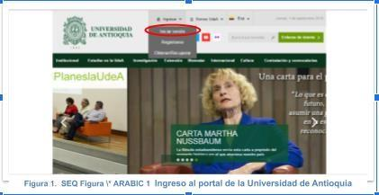
Figura 2. Inicio de sesión en portal de la UdeA.- Se abrirá una ventana con su nombre en la parte izquierda de la página, seleccione:
Enlaces de interés → Mis aplicaciones.
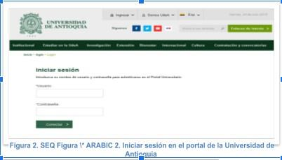
Figura 3. Aplicaciones del sistema.- El sistema carga una ventana con las aplicaciones de la Universidad a las cuales el usuario tiene acceso, seleccione la aplicación SIIU.
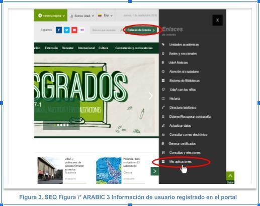
Figura 4. Seleccione SIIU.- Se debe abrir una nueva ventana con la aplicación SIIU en la que podrá iniciar el registro del proyecto.
!!! tip "Ventanas Emergentes"Si la ventana no abre inmediatamente, es necesaria la configuración de ventanas emergentes en el navegador y seleccionar la opción que autorice el SIIU.
3.2 Inscripción de convocatoria
Para la matrícula de convocatorias en el sistema SIIU, es indispensable considerar los prerrequisitos del proceso: - Tener proceso de selección creado para la convocatoria. (Ver manual de creación de proceso de selección). - Documento de términos de referencia de la convocatoria a inscribir.
> El usuario que realiza el proceso es el Administrador del sistema SIIU de las vicerrectorías.
Ruta de acceso: Ingrese a la opción del menú SIIU: Convocatorias > Inscripción.
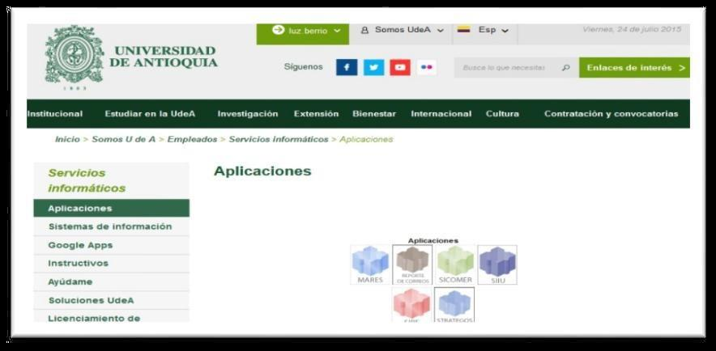
Figura 5. Menú convocatoria.El sistema presenta la pantalla con la información general de la convocatoria con el tren de opciones que serán configuradas: 1. Información general 2. Cronograma 3. Presupuestal 4. Compromisos y condiciones 5. Estructura de proyecto 6. Documentos soporte
Figura 6. Tren de opciones convocatoria.
3.3 Información general
3.3.1 Sección nombre y descripción de la convocatoria
Ingrese la información a los siguientes campos de acuerdo a los términos de referencia: - Nombre corto - Nombre largo - Descripción: ingrese la descripción de la convocatoria. (Tenga presente que tiene hasta 4000 caracteres para ingresar la información).
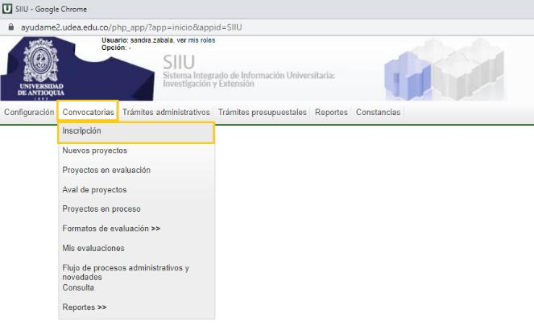
Figura 7. Información general / Sección nombre y descripción de la convocatoria.3.3.2 Sección Financiadores
- Defina los financiadores de la convocatoria; seleccione el botón Seleccionar financiadores y presione el icono + para agregar.
- Realice la búsqueda de los financiadores nacional o internacional. En caso de que no existan en la base de datos, el sistema permite ingresar los financiadores.
- Ingrese el nombre de la entidad en el campo palabra clave o escriba el NIT en el campo definido, presione el botón BUSCAR.
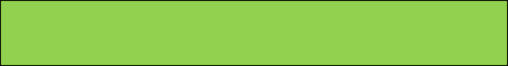
Figura 8. Información General - Sección financiadores.- Una vez se ha realizado la consulta, el sistema trae la información del financiador y permite seleccionarlo con la opción AGREGAR FINANCIADOR.
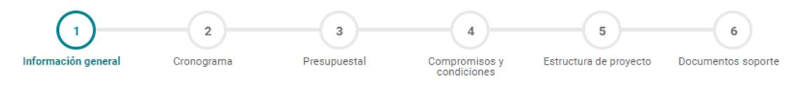
Figura 9. Selección de financiador.- Cuando el financiador elegido es la Universidad de Antioquia, el sistema solicita información adicional, como la dependencia y programa. Esta opción se realiza para posteriormente definir el centro de costos.
Figura 10. Selección dependencia.
- Presione el botón Guardar financiadores para el almacenamiento en la base de datos del financiador elegido.
3.3.3 Sección proceso de selección, fechas, hora de cierre de la convocatoria
En esta sección se debe ingresar información en los siguientes campos: - Buscar proceso de selección: se elige el proceso de selección definido para la convocatoria. - Fecha de apertura: se elige del calendario la fecha de apertura de la convocatoria. - Fecha de cierre: se elige del calendario la fecha de cierre de la convocatoria. - Fecha de resultados: se elige del calendario la fecha de resultados de la convocatoria. - Hora de cierre: se define la hora de cierre de la convocatoria en formato militar 24 horas.
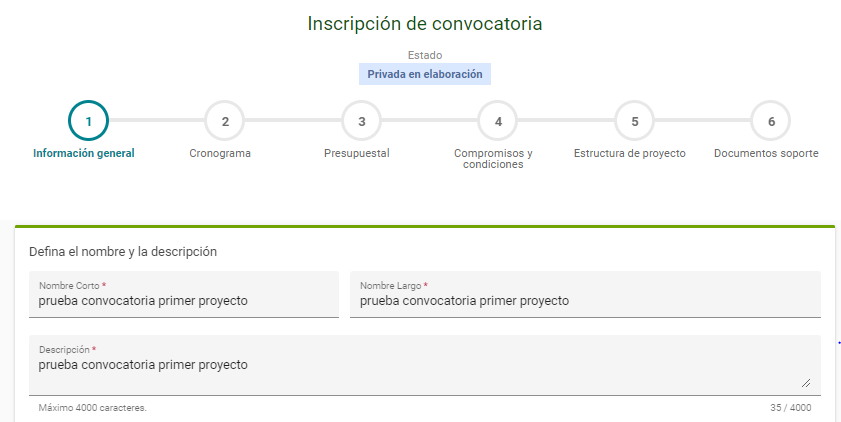
Figura 11. Definición de fechas para la convocatoria.3.3.4 Sección permisos
Defina los siguientes permisos: - Tipo: despliegue los usuarios que tendrán acceso para la matrícula de proyecto de convocatoria. - Subtipo: defina los roles que participan. - Instancia: seleccione la(s) instancia(s) que hacen parte de la gestión o evaluación de los proyectos que se vinculen a la convocatoria. - Utilización: seleccione la opción TODOS; estos son roles propios del sistema para el ingreso desde el portal.
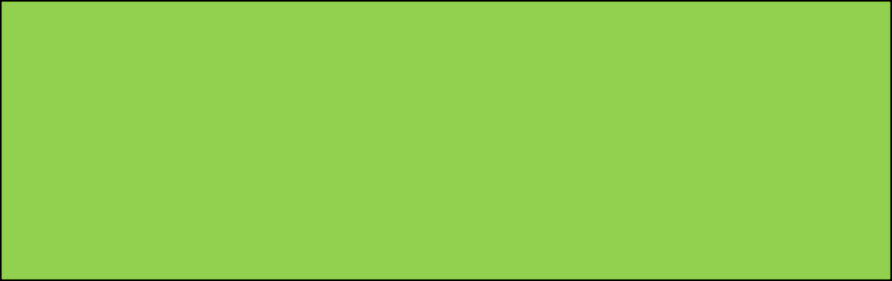
Figura 12. Permisos y roles de acceso.3.3.5 Sección Inicio con NN y GUARDAR
- Permite inicio con NN: indica si los proyectos permiten iniciar con NN, de acuerdo con los términos de referencia.
- Tiempo proyecto en lista: indica el tiempo que los proyectos quedan en lista de espera (por defecto aparece 0).
- Observaciones: campo que permite agregar observaciones para la convocatoria que se está configurando (puede ingresar hasta 400 caracteres).
- Presione el botón GUARDAR para almacenar el registro de configuración de la convocatoria.
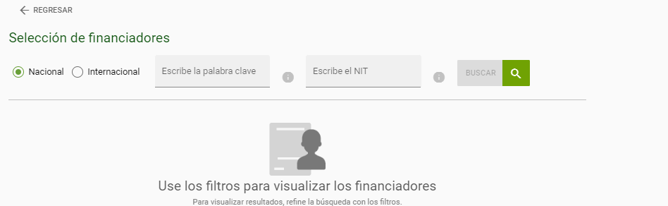
Figura 13. Inicio con NN y Guardar.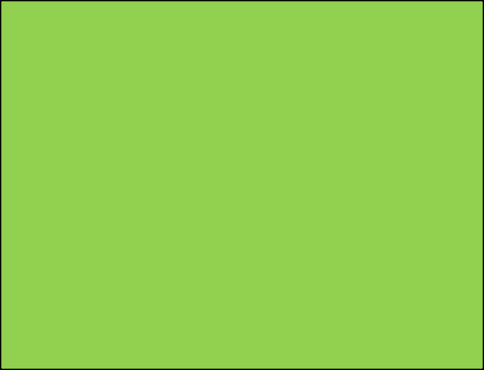
Figura 14. Ejemplo Información general.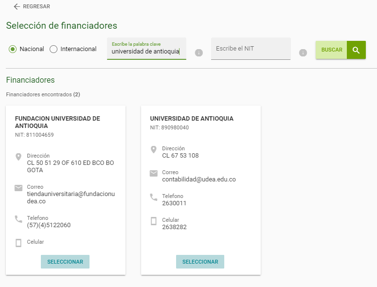
Figura 15. Ejemplo Información general (Plazos, prórrogas, suspensiones y cancelaciones).3.4 Cronograma de la convocatoria
Seleccione esta opción para agregar las etapas de la convocatoria y presione Agregar evento.
Figura 16. Agregar evento.
> Este proceso es muy importante porque define las etapas de los proyectos ya sea para AVALAR en el centro o APROBAR en la vicerrectoría. Se recomienda colocar en el campo Nombre del evento: Avalar proyecto o Aprobar proyecto según sea el caso.
El sistema presenta formulario con las opciones: - Nombre del evento: defina si el proceso a configurar es Avalar o Aprobar. - Hito en proceso de selección: despliegue la lista de valores para el hito y seleccione de acuerdo al nombre del evento definido.
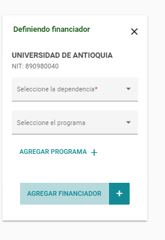
Figura 17. Configuración Hito.- Fecha de inicio: ingrese la fecha de inicio del evento.
- Fecha fin: ingrese la fecha fin del evento.
- Presione botón AGREGAR EVENTO.
Figura 18. Agregar evento.
Una vez se agregue el evento, el sistema presenta resumen del evento guardado. Recuerde presionar GUARDAR para almacenar el registro.
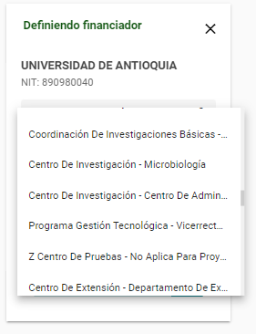
Figura 19. Guardar evento.Modificación de eventos
Puede modificar el evento ANTES de publicar la convocatoria: presione los tres puntos para Editar o Eliminar el evento.
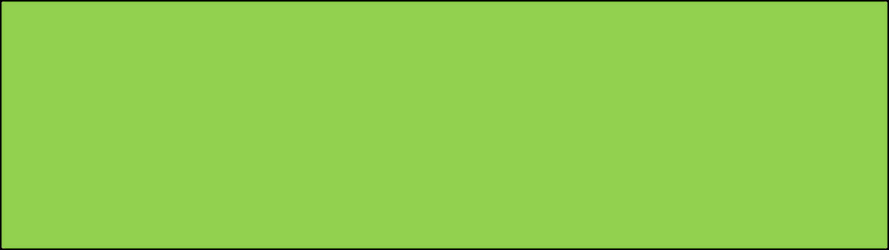
Figura 20. Editar evento.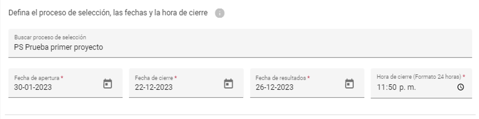
Figura 21. Resumen de hitos para la convocatoria.3.5 Presupuestal
En el proceso de configuración presupuestal para la convocatoria, aparecen las opciones: - Modalidades de financiación - Rubros financiables - Cambio de rubros preautorizados - Porcentaje máximo de rubros
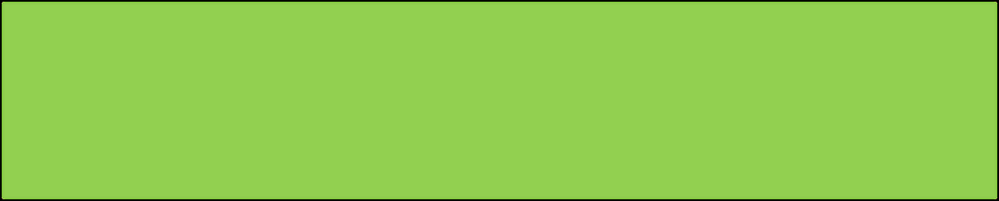
Figura 22. Configuración presupuestal de la convocatoria.3.5.1. Opción modalidades de financiación
Esta opción de la configuración presupuestal permite definir un monto fijo para la convocatoria. Contiene los campos: - Nombre modalidad: ingrese el nombre para la modalidad. (Pueden ingresarse más de una modalidad de acuerdo con los términos de referencia de la convocatoria). - Monto máximo: ingrese el valor máximo de la modalidad. - Duración máxima: ingrese la duración en meses. - Presione Agregar Modalidad.
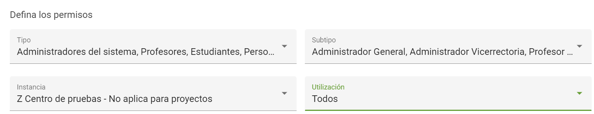
Figura 23. Modalidad de financiación.3.5.2. Opción rubros financiables
Permite definir los rubros que estarán habilitados para la convocatoria según los términos de referencia. Presione el botón Agregar Rubro +.
El sistema abre un nuevo formulario con los siguientes campos: - Rubro Financiable: despliegue lista de rubros y seleccione. - Nombre del Rubro: indique el nombre. - Permitido para: seleccione la instancia (S). - Justificación solicitada: ingrese valor en el campo. - Descripción: ingrese valor en el campo. - Rubro padre: despliegue lista de rubros si aplica. - Active la opción si el rubro aplica para los cofinanciadores: se activa esta opción cuando el proyecto cuenta con cofinanciadores con aportes, en fresco o en especie. - Calcular administración: cuando se selecciona el rubro administración, se activa este botón. - Presione botón Agregar Rubro.
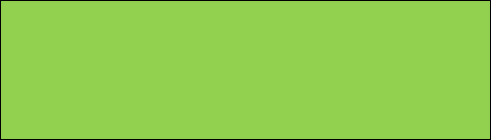
Figura 24. Agregar rubro.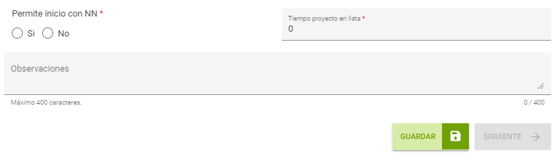
Figura 25. Lista rubros financiables.> Debe realizar el mismo proceso por cada rubro que desea vincular a la convocatoria.
Figura 26. Agregando rubro financiable.
3.5.3. Opción cambio de rubros preautorizados
Si requiere agregar rubros preautorizados, presione el botón Agregar Rubro +.
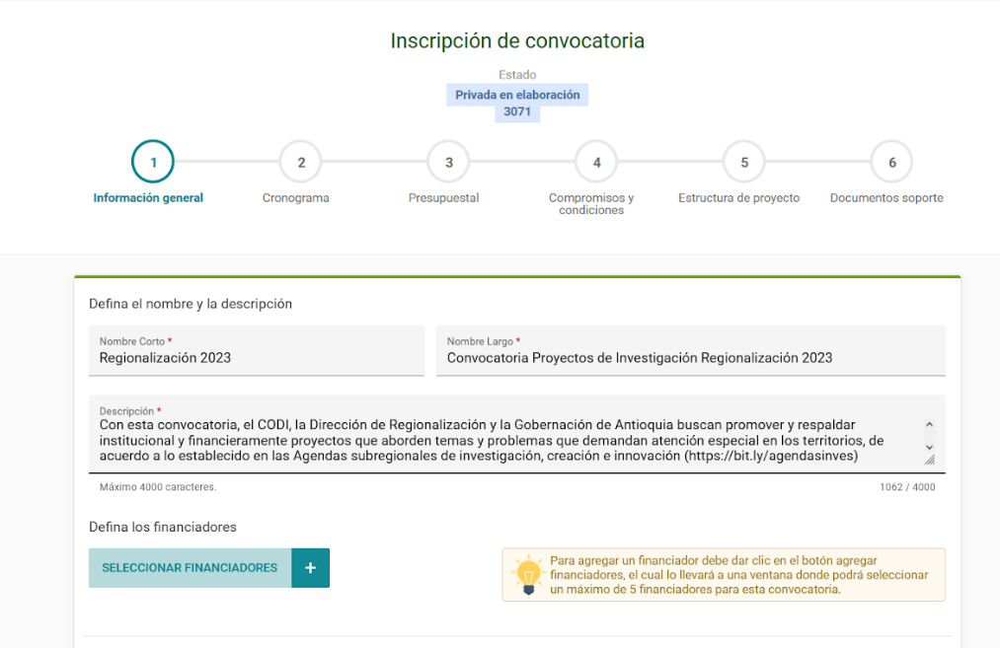
Figura 27. Rubros preautorizados.3.5.4. Porcentaje máximo de rubros
Dependiendo de los términos de la convocatoria, agregue el máximo porcentaje para los rubros. Presione el botón Agregar Porcentaje.
Figura 28. Máximo porcentaje para los rubros.
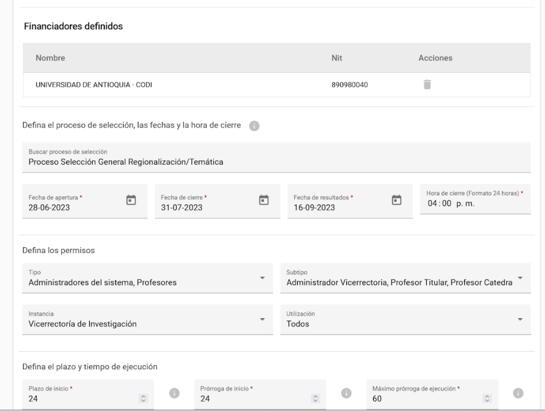
Figura 29. Porcentaje máximo de rubros.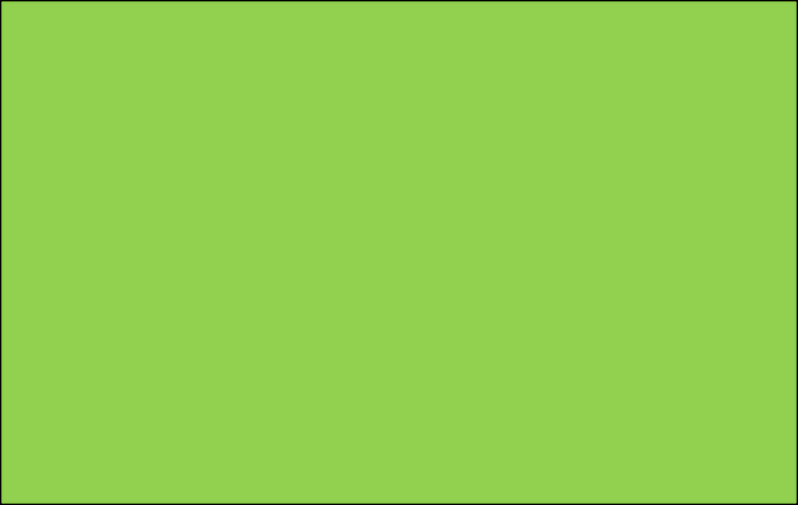
Figura 30. Resumen porcentaje máximo de rubros.3.6 Compromisos y condiciones formales
Permite la configuración en la convocatoria de los compromisos y las condiciones formales definidos en los términos de referencia.
3.6.1. Compromisos
Por defecto se posiciona en esta pestaña. Presione Agregar Compromiso.
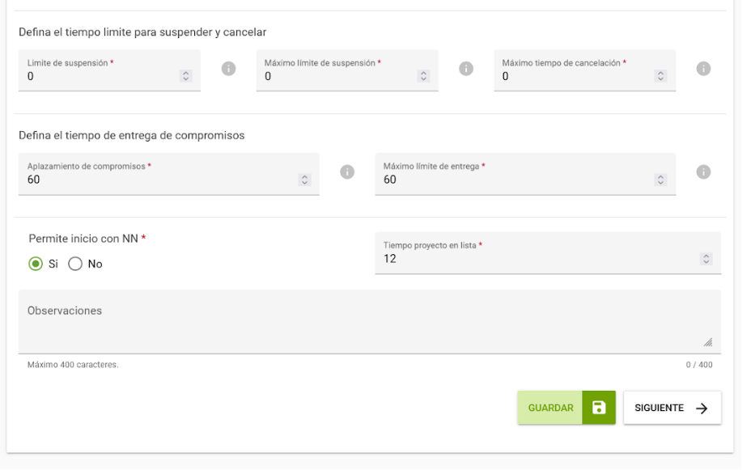
Figura 31. Compromisos y condiciones formales.Una vez se presiona el botón Agregar compromisos se ingresa información en los campos: - Comentario: se ingresa el compromiso. - Condición para ser obligatorio: campo opcional. - Modalidades que aplica: el sistema trae por defecto el nombre y el valor de la modalidad o modalidades ingresadas previamente. - Tipo: defina si el compromiso es opcional o si es obligatorio. - Presione botón Agregar Compromiso.
Figura 32. Agregar compromiso.
Una vez se guarde el compromiso aparece un resumen del compromiso guardado.
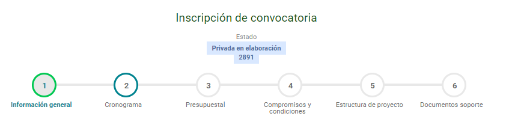
Figura 33. Resumen de compromisos.3.6.2. Condiciones formales
Las condiciones formales son definidas en los términos de referencia de la convocatoria. Se configuran en la convocatoria para que aparezcan en la matrícula de los proyectos y de esta manera se pueda validar su cumplimiento o no.
- Presione Agregar condición.
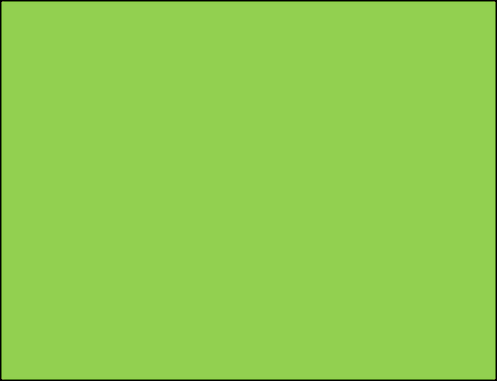
Figura 34. Agregar condición formal.- El sistema presenta el formulario con los siguientes campos:
| Campo | Ejemplo / Detalle |
|---|---|
| Explicación | Ingrese la(s) condiciones formales una a una de acuerdo a los términos de referencia. |
| Modalidades | Seleccione la(s) modalidad(s) configurada previamente (ej. Modalidad única). |
| Quien Verifica | Seleccione quien verifica las condiciones formales (ej. Centro de investigación, Vicerrectoría). |
| Momento de Verificar | Seleccione los momentos en que se verificarán las condiciones formales (ej. Presentación y selección). |
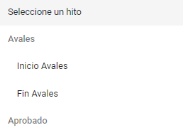
Figura 35. Ingresar condiciones formales.Presione el botón para agregar la condición formal ingresada; recuerde que debe realizar el mismo proceso por cada una.
- Cada vez que se agrega una condición formal y se guarda el sistema presenta un resumen. Esta opción permite editar la condición formal desde la opción de los tres puntos para modificarla ANTES de publicar la convocatoria. Recuerde presionar el botón GUARDAR para almacenar el registro.
Figura 36. Resumen condición formal.
3.7 Estructura de proyecto
La opción de estructura del proyecto permite definir la información requerida para la matrícula de los proyectos como son, por ejemplo: Marco teórico, objetivo general, bibliografía, entre otros que se encuentran definidos en los términos de referencia.
- Presione Agregar estructura proyecto para comenzar.
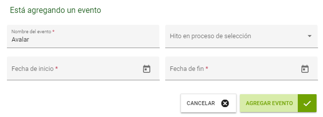
Figura 37. Agregar estructura proyecto.- El sistema despliega un formulario para ingresar información con los siguientes campos:
- Título
- Explicación
- Máximo número palabras
- Tipo: Obligatorio / Opcional
- Finalice con el botón Agregar estructura proyecto.
Figura 38. Ingresar estructura de proyecto.
- Cada vez que se agrega un registro de la estructura del proyecto y se guarda, el sistema presenta un resumen de lo guardado. Esta opción permite editar desde la opción de los tres puntos antes de publicar la convocatoria. Presione el botón GUARDAR para almacenar el registro.
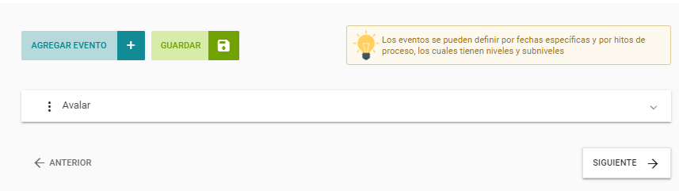
Figura 39. Resumen estructura proyecto.3.8 Documento soporte
La opción de documento soporte permite almacenar documentación de la convocatoria, como por ejemplo los términos de referencia. En esta opción encontrará también el botón PUBLICAR, el cual permite pasar la convocatoria de estado En elaboración a Publicado.
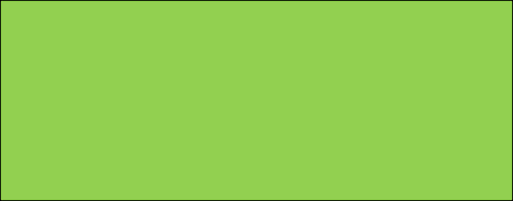
Figura 40. Publicar convocatoria.- El sistema despliega una ventana donde debe ingresar información en los campos obligatorios:
- Nombre del documento
- Número del documento
- Emisor
- Fecha de emisión
- Descripción
- Archivo adjunto: presione el icono + y proceda a seleccionar desde su PC el archivo que desea anexar.
- Cuando lo haya seleccionado presione el botón Agregar documento soporte. Luego presione el botón GUARDAR.
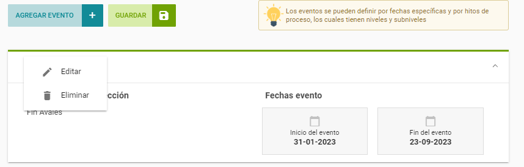
Figura 41. Documento adjunto.3.9 Publicar convocatoria
Presione el botón PUBLICAR:
Acción Irreversible
El sistema le presenta mensajes de confirmación ya que luego no podrá realizar cambios, por esta causa debe estar muy seguro de que va a publicar.
Figura 42. Mensaje confirmación para publicar convocatoria.
Una vez se confirma el mensaje con el botón Aceptar, el sistema genera un nuevo mensaje con un resumen de la convocatoria. Presione Aceptar para continuar.
La convocatoria pasa a estado Publicado y permite vincular los proyectos que se desean matricular.
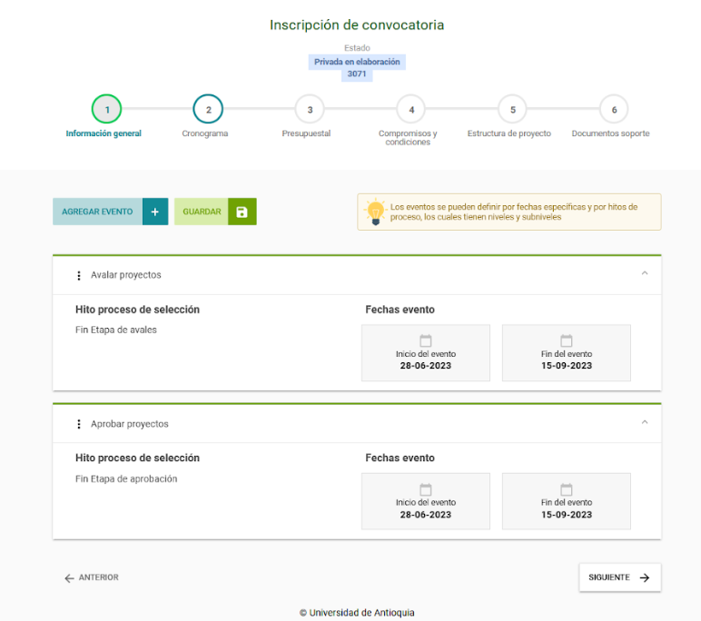
Figura 43. Resumen de la convocatoria.4. Nota de cambio
- No aplica para la primera versión.
Registro de Control y Firmas
| Rol | Nombre | Cargo / Dependencia | Fecha |
|---|---|---|---|
| Elaboró | Sandra Patricia Zabala Orrego | Contratista | 16-FEB-2024 |
| Elaboró | Lina María Ospina Pérez | Product Owner SIIU, Vicerrectoría de Investigación | 16-FEB-2024 |
| Revisó | Kerlin Yohana Bedoya Agudelo | Analista de Procesos, División de Arquitectura de Procesos | 12-MAR-2024 |
| Revisó | Julio César García Castrillón | Analista de Procesos, División de Arquitectura de Procesos | 12-MAR-2024 |
| Aprobó | Gloria Valencia Bustamante | Asistente, Vicerrectoría de Investigación | 13-MAR-2024 |